Zig Zag Chair
This project began with the construction of a zig-zag chair, which was then reinterpreted through a series of collages. These explorations led to the development of a 3×3 cube, where the essence of the chair was translated into a spatial composition.
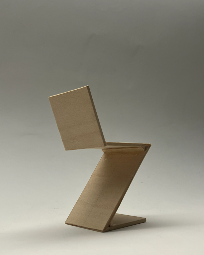
Side view
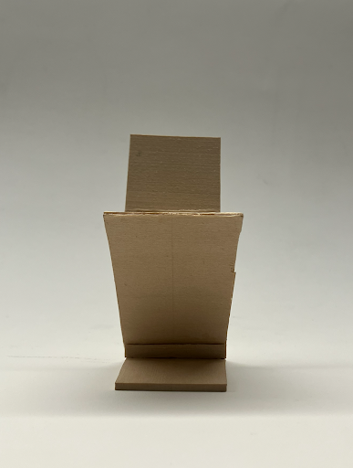
Front view
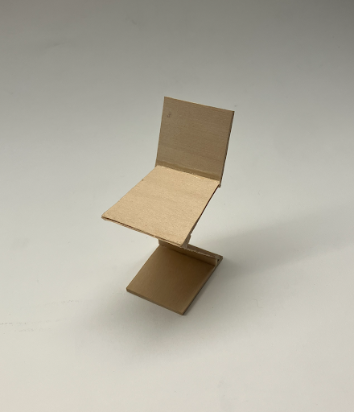
Perspective view
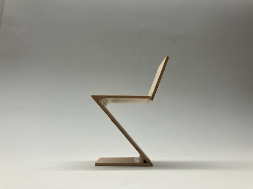
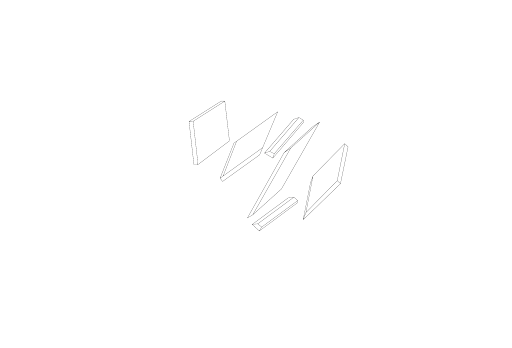
Fracture and Flow explores emotional tension through contrast, fractured lines, and spatial instability.
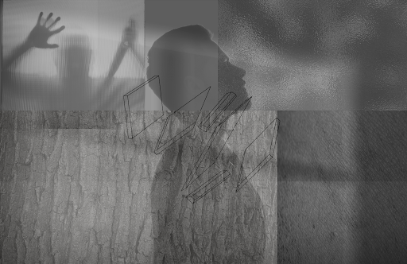
The chair becomes a structural support system as surrounding space visually collapses under pressure.
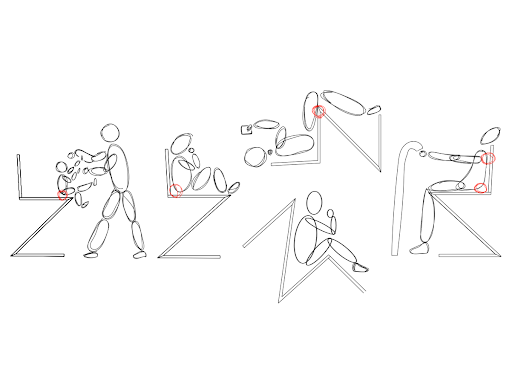
Human posture and body movement were used to study emotional interaction with the Zig-Zag Chair.
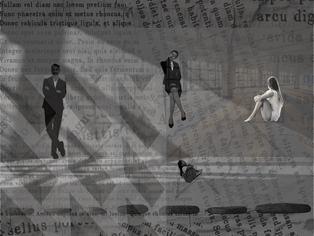
The sharp geometry creates both physical tension and psychological awareness between object and user.
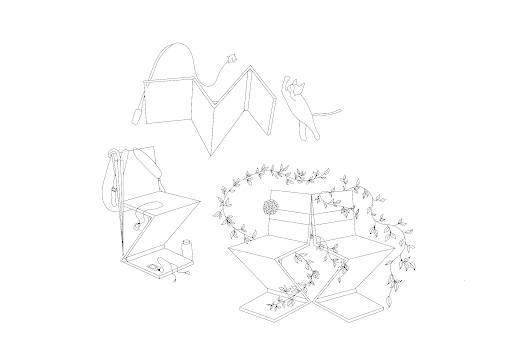
The Weight of Words examines social pressure through newspaper textures, shadows, and fragmented urban imagery.
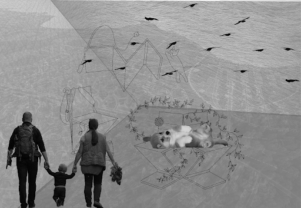
In Living Relation reinterprets the chair as part of warmth, family, communication, and shared everyday life.
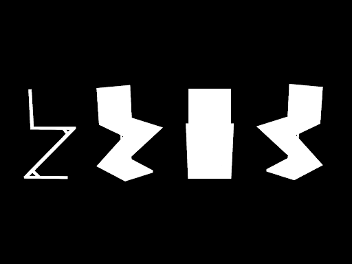
Surfaces of Self explores blurred identity through shadows, silhouettes, textures, and fragmented reflections.
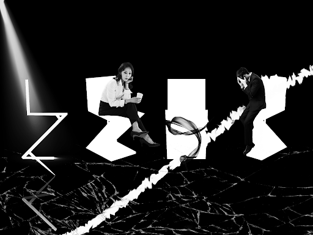
Positive and negative space dissolve together, making the chair feel both visible and emotionally distant.
This model explores hidden complexity beneath a simple structure. From one angle, the form appears minimal and stable, but from another, layered lines and gaps begin to appear. The unfinished connection between the vertical line and the upper plane represents tension, distance, and incomplete connection hidden beneath an organized surface.
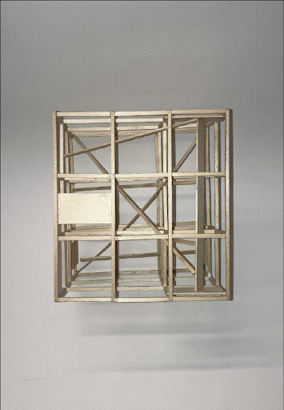
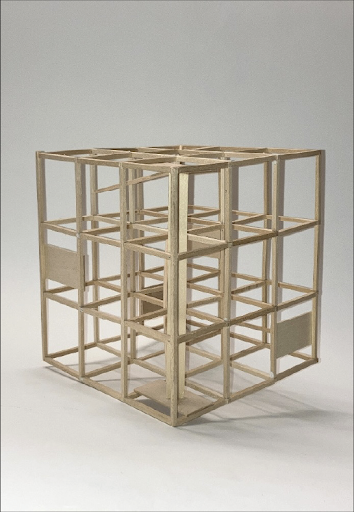
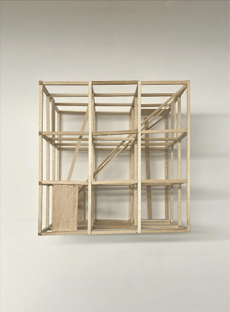
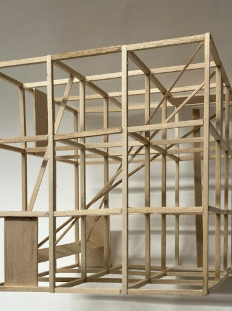
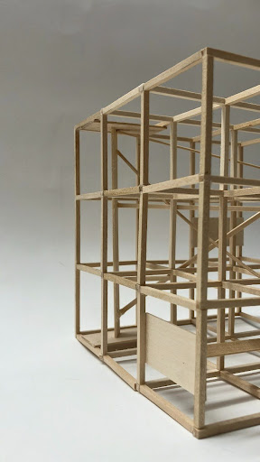
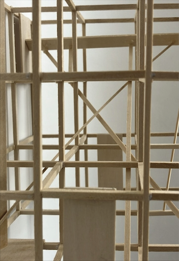